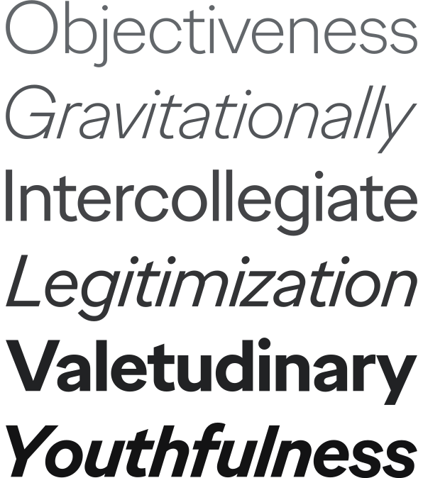
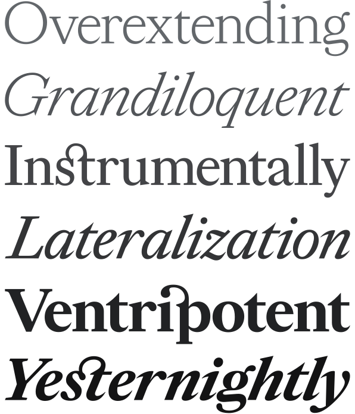

Logo
The current logo is an evolution of the promise kept by its predecessors. It bears some structural resemblance to its predecessor, Baskerville, but is otherwise a completely new typeface design with several connecting letterforms creating a logogram of the Ogilvy name.
Color
Color plays a central role in Ogilvy’s brand system. It should be used pervasively, presenting Ogilvy as a lively, colorful brand. The full palette is divided into three major categories, shown on this page.
Typefaces
There are two Ogilvy type families: Ogilvy Sans and Ogilvy Serif. They were designed with proportional, structural and stylistic similarities to work as a matching set. Consequently they occupy roughly the same amount of space and can be used interchangeably without harming a layout design.
-
Ogilvy Sans

-
Ogilvy Serif
